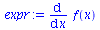
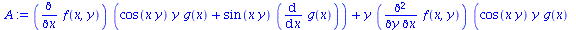
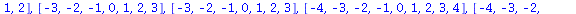
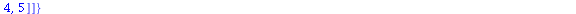

FD Language References
Table of Contents
1.2 grid_functions | |||||
1.3 known_functions | |||||
1.7 Boundary Flags | |||||
1.8 FD_table | |||||
1.9 FD Specifier | |||||
2.1 Make_FD (MFD) | |||||
2.2 Clean_FD (CFD) | |||||
2.3 CtoD | |||||
2.4 DtoC | |||||
2.5 Sten | |||||
2.6 Stencil | |||||
2.7 Gen_Sten (GS) | |||||
2.8 Show_FD (SFD) | |||||
2.10 Update_FD_Table | |||||
2.11 Gen_Eval_Code (GEC) | |||||
2.13 FD | |||||
2.14 FD_Periodic | |||||
2.15 A_FD_Even | |||||
2.16 A_FD_Odd | |||||
This document is under construction!
1 Data Types and Semantics
This section describes the internal/reserved variables, and the derived data types that are used to specify a PDE over a discrete numerical domain.
1.1 Built-in Types and Reserved Variables
FD reserves the variables (t,x,y,z) for the name of the time and spatial
independent variables for which a PDE or a derivative expression is defined on.
They are protected variables after FD is loaded.
Similarly FD reserves the symbols (n,i,j,k) for indexing the corresponding
coordinate points (t(n),x(i),y(j),z(k)). Also it uses (ht,hx,hy,hz)
as the name for the step-size of the discretization along these coordinates.
The names (Nt,Nx,Ny,Nz) are reserved for the size of the discretized
domain for these coordinates, and (xmin,xmax),(ymin,ymax),(zmin,zmax)
is used as a flag for the boundary points.
The associations:
t <--> t(n) <--> n <--> ht <--> Nt
x <--> x(i) <--> i <--> hx <--> Nx <--> (xmin,xmax)
y <--> y(j) <--> j <--> hy <--> Ny <--> (ymin,ymax)
z <--> z(k) <--> k <--> hz <--> Nz <--> (zmin,zmax)
is built into FD and is its fundamental way to recognize a function, differential expression, valid discrete expression and to perform finite differencing operations.
For example if f is defined as a grid function, FD recognizes that an
expression like f(x+hx,y-2*hy) when discretized should be converted to
f(i+1,j-2), or an expression f(x+hy) is invalid and cannot be
discretized, since hy is not an stepping size in x direction.
SEE ALSO:
VCE, VDE, Boundary Flags
1.2 grid_functions
FD uses the global variable (of type set in Maple) grid_functions as its reference
for all of the functions that are defined in a discretized domain. All of the
grid functions are supposed to be discretized as:
$$ f(t,x) \rightarrow f(t_n,x_i,y_j) \equiv f^n_{i,j} $$
therefore, f(t,x) will be denoted as
f(t,x,y) --> f(n,i,j)
in its discrete version. (which will later become n_f(i,j) since usually in
finite differencing algorithms user do not keep all time levels as vector, but
rather finite number of them, see RTL section)
Obviously variables (t,x,y,z) are by definition grid functions and are discretized as
(t(n),x(i),y(j),z(k)).
Note that if a function is not defined in grid_functions set, it is
considered to be a function that user will provide to the FORTRAN routines,
therefore FD only discretizes its arguments as: \( (g \notin GFS ) \)
g(y,z) --> g(y(j),z(k))
SEE ALSO:
known_functions, RTL
1.3 known_functions
known_functions is a global set of functions that FD considers as given.
The set includes:
{*, +, ^, cos, cosh, cot, coth, exp, ln, log, sin, sinh, sqrt, tan, tanh}
which are functions known to FORTRAN language and most of other languages used in finite differencing calculations.
FD only discretizes their arguments, for example:
sin(x*y^2)+exp(z) --> sin(x(i)*y(j)^2) + exp(z(k))
SEE ALSO:
grid_functions
1.4 VCE (Valid Continuous Expression)
Valid Continuous Expression (VCE) is function of the time and spatial coordinate: \( f(t+nh_t,x+mh_x,y+lh_y,z+qh_z) \) where \( (t,x,y,z) \) are the reserved time and spatial coordinates \( (h_t,h_x,h_y,h_z) \) are the reserved discretization step-size associated with them and \( (n,m,l,q) \) are constant integers.
For example:
Valid CE:
1) f(t,x,y) + r(sin(az*t),u(y)) + (g(x+hx)-g(x-hx))/(2*hx)
2) f(x+2*hx,y-3*hy) + a
3) f(t+ht,x+2) + g(x*y) (also see below vv)
4) f(z,x,t,y)
Invalid CE:
1) f(t,x) + i
2) cos(j)
3) f(x,j)
4) diff(f(x),x)
If the grid functions set is defined, then an expression is only valid if its grid functions have only the dependency of the form: \( f(t+nh_t,x+mh_x,y+lh_y,z+qh_z) \)
For example, if grid_functions := {f,g}
Invalid CE:
1) f(t+ht,x+2)
2) f(x+hy)
3) g(x*y) (compare to above ^^)
4) f(u(x),y)
Note that FD does not check for the consistency in the order of the variables, i. e. f(x,y) + f(y,x) is considered a VCE.
SEE ALSO:
grid_functions, known_functions, VDE, CtoD
1.5 VDE (Valid Discrete Expression)
VDE is a function of the form \( f(I+m,J+n,\cdots) \), where \( I, J, \cdots \) are one of the indices \( (n,i,j,k) \) and \( (m,n,\cdots) \) are constant integers, and \( f \) is a grid function, \( f \in GFS \) or one of the coordinates with the proper indexing.
Basically VDE is an expression that can be evaluated on the discrete point \( (n,i,j,k) \) and its dependency on these indices is only through grid functions or coordinates.
For example for grid_functions := {f,g}
Valid DE:
1) g(i+1,j-2)
2) x(i) + y(j) + sin(z(k))
3) u(x(i),a) + r(z(k),y(j))
4) r(x(i),y(j))
5) f(i+3-Nx,j) (if periodic flat enabled, see FD_Periodic)
Invalid DE:
1) f(i*j)
2) g(i,j) + i
3) g(i,a)
4) g(j) + x(k)
5) g(x(i),j)
6) g(i,j) + f(x(i),y(j))
SEE ALSO:
VCE, DtoC, grid_functions
1.6 DDS (Discrete Domain Specifier)
Discrete Domain Specifier (DDS) is the core part of specifiying the numerical
domain in which a PDE will be solved, or a differential expression needs to be
evaluated. DDS is of type: list(equation) in Maple language, in which each
equation is of type set = VDE/VCE, and each set has elememnts of type
I = [begin,N-end,step], where begin, end and step are
constant integer, I is one of the (i,j,k) and N is one of the
(Nx,Ny,Nz). In a compact form:
DDS::list( A::set( I=[begin,N-end,step] ) = EXPR::VDE/VCE )
For example, a 2-dimensional DDS that specifies a domain for which the interior points have value equal to the laplacian of a function and boundaries are set to zero.
DDSLaplace:=[
{ i = [1,Nx,1] , j=[1,1,1] } = myzero*x*y,
{ i = [1,Nx,1] , j=[Ny,Ny,1] } = myzero*x*y,
{ i = [2,Nx-1,1], j=[2,Ny-1,1]} = diff(f(x,y),x,x) + diff(f(x,y),y,y)
{ i = [1,1,1] , j=[1,Ny,1] } = myzero*x*y,
{ i = [Nx,Nx,1] , j=[1,Ny,1] } = myzero*x*y
];
Note that the RHS's can also be VDE, for example here is a discrete version of the previous example:
DDSLaplace:=[
{ i = [1,Nx,1] , j=[1,1,1] } = myzero*x(i)*y(j),
{ i = [1,Nx,1] , j=[Ny,Ny,1] } = myzero*x(i)*y(j),
{ i = [2,Nx-1,1], j=[2,Ny-1,1]} = LaplaceF_Discrete,
{ i = [1,1,1] , j=[1,Ny,1] } = myzero*x(i)*y(j),
{ i = [Nx,Nx,1] , j=[1,Ny,1] } = myzero*x(i)*y(j)
]:
in which LaplaceF_Discrete is a VDE version of the laplace operator. See
the full maple session below:
| > | read "FD.mpl": MFD(): |
| Warning, grid_functions is not assigned |
| FD table updated, see the content using SFDT() command |
| > | grid_functions:={f}: |
| > | LaplaceF:=diff(f(x,y),x,x) + diff(f(x,y),y,y): |
| > | LaplaceF_Discrete:=Gen_Sten(LaplaceF); |
| > | DDSLaplace:=[ |
| > | { i = [1,Nx,1] , j=[1,1,1] } = myzero*x(i)*y(j), |
| > | { i = [1,Nx,1] , j=[Ny,Ny,1] } = myzero*x(i)*y(j), |
| > | { i = [2,Nx-1,1], j=[2,Ny-1,1]} = LaplaceF_Discrete, |
| > | { i = [1,1,1] , j=[1,Ny,1] } = myzero*x(i)*y(j), |
| > | { i = [Nx,Nx,1] , j=[1,Ny,1] } = myzero*x(i)*y(j) |
| > | ]: |
| > | interface(warnlevel=0): |
| > | A_Gen_Eval_Code(DDSLaplace,input="d",proc_name="calc_laplace"); |
| Fortran Code is written to calc_laplace.f
C header is written to calc_laplace.h C call is written to calc_laplace_call |
| > |
DDS's are used to pose a PDE or calculate a differential expression over a
discrete numerical domain. They are usually passed in to routines such as
A_Gen_Res_Code, A_Gen_Eval_Code or A_Gen_Solve_Code to be
computed as a residual or computed as a point-wise function or to be solved
as a PDE.
SEE ALSO:
Gen_Sten, A_Gen_Res_Code, A_Gen_Eval_Code, A_Gen_Solve_Code
1.7 Boundary Flags
Boundary flags are optional equations of type:
b = xmin/xmax/ymin/ymax/zmin/zmax
where / denotes one of the options. They can be added to the DDS's to
allow communication with a parallel or adaptive mesh refinement
infrastructure such as PAMR.
Basically it allows evaluation or solving a VDE limited to the condition that
the point is indeed a real physical boundary point and not a inner-CPU
boundary point.
Here is an example of boundary flag usage for the Laplace operator:
DDSLaplace:=[
{ i = [1,Nx,1] , j=[1,1,1] , b=ymin } = myzero*x(i)*y(j),
{ i = [1,Nx,1] , j=[Ny,Ny,1] , b=ymax } = myzero*x(i)*y(j),
{ i = [2,Nx-1,1], j=[2,Ny-1,1] } = LaplaceF_Discrete,
{ i = [1,1,1] , j=[1,Ny,1] , b=xmin } = myzero*x(i)*y(j),
{ i = [Nx,Nx,1] , j=[1,Ny,1] , b=xmax } = myzero*x(i)*y(j)
]:
Which creates FORTRAN code that uses the phys_bdy array to decide if it
needs to compute/solve RHS or not.
SEE ALSO:
DDS
1.8 FD_table
FD uses an internal table named FD_table to decide about the finite
differencing scheme. The table simply represents which points (to left or
right) shall be used to compute the n'th derivative of a function.
By default when Make_FD() is called, this table is loaded with centered
second-order accurate finite differencing scheme for upto 5th derivative.
(This limit can be adjusted by changing the internal variable
MAX_DERIVATIVE_NUMBER).
FD_table has a simple format:
FD_table::table([ coord=list(list(integers))])
For example the default FD_table is:
table([
t = [ [0] , [-1,0,1], [-1,0,1] , [-2,-1,0,1,2] , [-2,-1,0,1,2] , ... ]
x = [ [0] , [-1,0,1], [-1,0,1] , [-2,-1,0,1,2] , [-2,-1,0,1,2] , ... ]
y = [ [0] , [-1,0,1], [-1,0,1] , [-2,-1,0,1,2] , [-2,-1,0,1,2] , ... ]
z = [ [0] , [-1,0,1], [-1,0,1] , [-2,-1,0,1,2] , [-2,-1,0,1,2] , ... ]
])
where each element in the list of integers denotes which points shall be used to compute for the function, its first derivative, its second derivative etc. This table will discretize the function and itd derivatives along x as:
f(x)--------------> use: f(i)
diff(f(x),x)------> use: f(i-1),f(i),f(i+1)
diff(f(x),x,x)----> use: f(i-1),f(i),f(i+1)
diff(f(x),x,x,x)--> use: f(i-2),f(i-1),f(i),f(i+1),f(i+2)
...
and similarly for the rest of the coordinates.
The content of FD_table can be adjusted manually or using
Update_FD_Table(). User can see the content of FD_table using Show_FD_Table() call.
SEE ALSO:
Update_FD_Table, Show_FD_Table, FD Specifier, Make_FD
1.9 FD Specifier
Finite Differencing Specifier (FDS) is a table to specify the finite
differencing scheme that needs to be implemented in various differential
expression. In principle user can define any FD scheme by changing the content
of FD_table, however FD allows adjusting this table in a convenient way by
providing a table that describes how many points to the left and right of a
given point is allowed to compute the derivative and what order of accuracy is
desired.
FDS has the following format:
FDS::table([ coord=[pt_left,-1] or [-1,-1] or [-1,pt_right] ])
in which pt_left and pt_right are constant integers and -1 denotes
infinite number points that are allowed in the other direction. For example
[-1,-1] means FD is allowed to expand to any number of points to the left
or right to find the finite differencing approximation of a derivative to the
desired accuracy. FD's internal algorithm is such that it provides either the
given accuracy or one order better.
For example the following specifies a centered finite differencing and we are
updating the FD_table to second order accuracy.
FDS_center:=table([ t=[-1,-1],x=[-1,-1],y=[-1,-1],z=[-1,-1] ]);
Update_FD_Table(2,FDS_center);
This is centered FDS in time t and x direction, forward in y and
backward in z, finally we update
FD_table to be second order accurate.
FDS_mixed:=table([ t=[-1,-1],x=[-1,-1],y=[0,-1],z=[-1,0] ]);
Update_FD_Table(2,FDS_mixed);
Now the content of FD_table looks like this:
table([
t = [[0], [-1, 0, 1], [-1, 0, 1], [-2, -1, 0, 1, 2], ... ]
x = [[0], [-1, 0, 1], [-1, 0, 1], [-2, -1, 0, 1, 2], ... ]
y = [[0], [0, 1, 2], [0, 1, 2, 3, 4], ... ]
z = [[0], [-2, -1, 0], [-4, -3, -2, -1, 0], ...]
])
Another example: centered in t,x,y directions, in z direction 1 point to
the left is allowed and it is a forward scheme, and we require 4'th order
accuracy:
FDS:=table([ t=[-1,-1],x=[-1,-1],y=[-1,-1],z=[1,-1] ]);
Update_FD_Table(4,FDS);
Now FD_table has the following form:
table([
t = [[0], [-1, 0, 1], [-1, 0, 1], [-2, -1, 0, 1, 2], ... ]
x = [[0], [-1, 0, 1], [-1, 0, 1], [-2, -1, 0, 1, 2], ... ]
y = [[0], [-1, 0, 1], [-1, 0, 1], [-2, -1, 0, 1, 2], ... ]
z = [[0], [-1, 0, 1, 2, 3], [-1, 0, 1, 2, 3, 4, 5],
[-1, 0, 1, 2, 3, 4, 5], [-1, 0, 1, 2, 3, 4, 5, 6, 7], ...]
)]
As you can see FD uses more points as needed for higher derivatives to achieve the 4'th order accuracy (or better).
SEE ALSO:
Update_FD_Table, Show_FD_Table, FFDAAM
2 Procedures
This section describes the front-end procedures of FD that are available to the user for solving a PDE or finding finite difference approximation to a differential expression.
2.1 Make_FD (MFD)
Calling Sequence:
Make_FD()
Synonym:
MFD()
Description:
Sets up the FD envirounment and initializes the internal variables and tables for FDA calculations. It is usually called after reading the FD package:
Examples:
> read "FD.mpl":
> Make_FD();
Warning, grid_functions is not assigned
FD table updated, see the content using SFDT() command
FD_on = 1
>
A warning will be displayed to remind the user to initialize the
grid_functions set.
SEE ALSO:
Clean_FD
2.2 Clean_FD (CFD)
Calling Sequence:
Clean_FD()
Synonym:
CFD()
Description:
Cleans the tables and variables used by FD and unprotects the reserved
variables. Clean_FD() is usually called if the maple session is been
active before and some of the FD variables might not be set to their atomic
value.
Examples:
> read "FD.mpl":
> Make_FD();
Warning, grid_functions is not assigned
FD table updated, see the content using SFDT() command
FD_on = 1
> Clean_FD();
FD_on = 0
>
SEE ALSO:
Make_FD
2.3 CtoD
Calling Sequence:
CtoD(expr::VCE)
Synonym:
Continuous_To_Discrete
Description:
Converts a VCE (Valid Continuous Expression) to a VDE (Valid Discrete Expression). grid functions are converted to their index form, coordinates are indexed and the coordinates in non-grid functions are only converted to the indexed coordinates.
Examples:
| > | read("FD.mpl"):MFD(): |
| Warning, grid_functions is not assigned |
| FD table updated, see the content using SFDT() command |
| > | grid_functions:={f,g}; |
| > | CtoD(f(x,y)+g(x,z)+x^2*y); |
| > | CtoD(f(x+hx)+g(y-hy)); |
| > | CtoD(f(t,x)+u(x,y)+r(g(x))); |
| > | CtoD(diff(f(x),x)); |
| Differential expression is not a valid continuous expression |
| Error, (in CtoD) Invalid continuous expression |
| > | CtoD(f(x) + j); |
| Invalid continuous expression, detected an index in:f(x)+j |
| Error, (in CtoD) Invalid continuous expression |
| > | CtoD(x(y)); |
| A function is named same as variable in x(y) |
| Error, (in CtoD) Invalid continuous expression |
| > |
Example Files: [maple worksheet] [maple input]
SEE ALSO:
DtoC, VCE
2.4 DtoC
Calling Sequence:
DtoC(dexpr::VDE)
Synonym:
Discrete_To_Continuous
Description:
Converts a VDE to a VCE. All of the grid functions and coordinates are converted to their continuous form.
Examples:
| > | read("FD.mpl"): |
| > | MFD(): |
| Warning, grid_functions is not assigned |
| FD table updated, see the content using SFDT() command |
| > | grid_functions:={f,g}: |
| > | DtoC( f(i) + g(j)) ; |
| > | DtoC( f(i+1) + g(j-2) + z(k)) ; |
| > | DtoC(f(i+1,j-1,k)); |
| > | A:= ( 6*f(n,i) + f(n,i+2) + f(n,i-2)-4*(f(n,i+1) + f(n,i-1)) ): |
| > | B:=DtoC(A); |
| > | E:=convert(series(B,hx),polynom); |
| > | DtoC( f(i+j)); |
| Invalid grid function detected: f(i+j) |
| Error, (in DtoC) Invalid discrete expression |
| > | DtoC(x(j)); |
| Invalid discrete expression, detected a variable that is indexed different than index_table:x(j)
Or a function that is named same as the variables:x(j) |
| Error, (in DtoC) Invalid discrete expression |
| > |
Example Files: [maple worksheet] [maple input]
SEE ALSO:
CtoD, VDE
2.5 Sten
Calling Sequence:
Sten(deriv_expr,points)
Parameters:
deriv_expr: A derivative expression of single variable such asdiff(f(x),x)ordiff(g(x),x,x,x)points: list of integers such as [-2,0,3,5]
Description:
Creates a finite differencing stencil
using the given points for a single
differential expression. Note that higher derivatives require more number
of points to be evaluated as an FDA. This is solely for computing FDA and
is not used in general when it comes to solving a PDE using FD methods.
Multivariable form of this function is named Stencil.
See the function Gen_Sten for the generalization of this procedure to
an arbitrary derivative expression.
Examples:
| > | read("FD.mpl"): MFD(); |
| Warning, grid_functions is not assigned |
| FD table updated, see the content using SFDT() command |
| > | expr:= diff(f(x),x); |
|  |
| > | A:=Sten(expr,[0,1,2]); |
| > | B:=convert(series(A,h),polynom); |
| > | residual := simplify(eval( B- expr, { h = 0})) ; |
| > |
Example Files: [maple worksheet] [maple input]
SEE ALSO:
Stencil, Gen_Sten
2.6 Stencil
Calling Sequence:
Stencil(deriv_expr,points,stepsizes,{discretized=false})
Parameters:
deriv_expr: A derivative expression of multivariable and mixed derivatives such asdiff(f(x,y),y,y,x).points: list(list(integers)) that specifies the points that should be used for the derivatives along each coordinate (in the order that the coordiantes are specified in the function name. for instance fordiff(f(x,y),y,y,x)the points in the form[[0,1,2],[-1,0,1]]will use the[0,1,2]for thexderivative and[-1,0,1]for the secondyderivativestepsize: list(symbols) to specify the symbol used for the stepsize of the discretization along each coordinate (in the same order as the coordiantes in the function)- (optional)
discretized:boolean type to specify if the returning stencil should be in a VDE form or a VCE. Default is VCE.
Description:
Creates a multi-variable stencil of a given single differential expression.
See Gen_Sten for the generalization of this function to an arbitrary
length differential expression.
Examples:
| > | read("FD.mpl"):MFD(): |
| Warning, grid_functions is not assigned |
| FD table updated, see the content using SFDT() command |
| > | expr:=diff(f(x,y),x,y); |
| > | Stencil(expr,[[-1,0,1],[-1,0,1]],[hx,hy]); |
| > | Stencil(expr,[[-1,0,1],[-1,0,1]],[hx,hy],discretized=true); |
More Complex Example:
| > | expr:=diff(u(x,t,y,z),x,x,t,z): |
| > | A:=Stencil(expr,[[0,1,-1,3],[-1,0,1],[0,1,2]],[hx,ht,hz]); |
| > | B:=A: |
| > | stp_tb:=[hx,ht,hz]: |
| > | for ii from 1 to nops(stp_tb) do |
| > | B:=convert(series(B,stp_tb[ii],4),polynom): |
| > | end do: |
| > | B; |
| > | residual:=simplify(eval(B-expr,{ht=0,hx=0,hz=0})); |
| > |
Example Files: [maple worksheet] [maple input]
SEE ALSO:
Sten, Gen_Sten
2.7 Gen_Sten (GS)
Calling Sequence:
Gen_Sten(expr::algebraic,{discretized=true,sym=false})
Synonym:
GS
Parameters:
expr: An arbitrary algebraic expression which can contain derivatives, constants and- (optional)
discretized: Boolean to specify the format of output to be VDE or VCE. - (optional)
sym: (development) If true, just replaces the derivatives with symbols as described.
Description:
Returns a discretized version of an algebraic expression, if it finds
derivative terms it replaces them with their equivalent finite difference
expressions using the scheme FD_table specifies.
if discretized is disabled, returns a VCE rather than a VDE.
if sym enabled the routine just replaces the derivatives with symbols
such as diff(f(x,y),x,x,y) --> f112(i,j), where 11 denotes 2 derivatives
with respect to the first argument and 2 denotes 1 derivative with
respect to the second argument.
All of the derivative expressions that are found and their replaced values
and the accuracy of the resulting FDA are stored in a table named
FD_results. See Show_FD().
Examples:
| > | read("FD.mpl"): MFD(): |
| FD table updated, see the content using SFDT() command |
| > | grid_functions:={f,g}: |
| > | expr:=diff(f(x),x,x)+diff(g(x,y),x,y)+x^2*y+5; |
| > | Gen_Sten(expr); |
Changing to forward in x FDA scheme and 4th order:
| > | FDS_forwardx:=table([ t=[-1,-1],x=[0,-1],y=[-1,-1],z=[-1,-1] ]): |
| > | Update_FD_Table(4,FDS_forwardx): |
| FD table updated, see the content using SFDT() command |
| > | Gen_Sten(expr); |
| > | Gen_Sten(diff(f(t,x),t)); |
Changing the FD_table manually:
| > | FD_table[t] := [ [0] , [0,1] ]: |
| > | Gen_Sten(diff(f(t,x),t)); |
At this point, FD_table's t content does not have any point to specify the scheme for second derivative in time:
| > | Gen_Sten(diff(g(t),t,t)); |
| Error, (in Extract_FD) cannot find points from FD_table for a derivative |
And in the following points are provided, but not enough for a second order derivative:
| > | FD_table[t] := [ [0] , [0,1] ,[0,1] ]: |
| > | Gen_Sten(diff(g(t),t,t)); |
| Error, (in Calc_Stencil_L) Failed to find FDA coefficients, check FD_table content! |
It is safer to update the FD table using FDS tables and specifing the order of accuracy:
| > | FDS_backwardt:=table([ t=[-1,2],x=[-1,-1],y=[-1,-1],z=[-1,-1] ]): |
| > | Update_FD_Table(5,FDS_backwardt): |
| FD table updated, see the content using SFDT() command |
| > | Gen_Sten(diff(g(t,x),t,t)); |
| > |
Example Files: [maple worksheet] [maple input]
SEE ALSO:
VDE, VCE, FD_table, Show_FD
2.8 Show_FD (SFD)
Calling Sequence:
Show_FD()
Synonym:
SFD()
Description:
Displays the FD_results table content, which is a table of the form:
FD_results::table( [ diff_expr = [FDA_expr , [ [x,ordx] , [y,ordy] ,...] ]])
in which diff_expr is a single expression multi(or single)-variable
derivative expression, FDA_expr is the equivalent finite difference
approximation that has been computed for it and [x,ordx] represents the
order of accuracy for the FDA_expr. The content of this table is
generated as one calls the Gen_Sten procedure. User can see how
Gen_Sten is operating by looking at the content of this table.
The case ordX=-1 is when the FDA is exact, i.e. the diff_expr does not
contain derivative with respect to X coordinate.
Examples:
| > | read("FD.mpl"):MFD(): |
| Warning, grid_functions is not assigned |
| FD table updated, see the content using SFDT() command |
| > | grid_functions:={f,g}: |
| > | A:=diff(y*f(x,y)*diff(sin(x*y)*g(x),x),x,y); |
|  |
| > | B:=Gen_Sten(A): |
| > | lprint(B); |
| (1/2)*(-f(i-1, j)+f(i+1, j))*(cos(x(i)*y(j))*y(j)*g(i)-(1/2)*sin(x(i)*y(j))*(g(i-1)-g(i+1))/hx)/hx-(1/4)*y(j)*(-f(i-1, j-1)+f(i-1, j+1)+f(i+1, j-1)-f(i+1, j+1))*(cos(x(i)*y(j))*y(j)*g(i)-(1/2)*sin(x(i)*y(j))*(g(i-1)-g(i+1))/hx)/(hy*hx)+(1/2)*y(j)*(-f(i-1, j)+f(i+1, j))*(-sin(x(i)*y(j))*x(i)*y(j)*g(i)+cos(x(i)*y(j))*g(i)-(1/2)*cos(x(i)*y(j))*x(i)*(g(i-1)-g(i+1))/hx)/hx+f(i, j)*(-sin(x(i)*y(j))*y(j)^2*g(i)-cos(x(i)*y(j))*y(j)*(g(i-1)-g(i+1))/hx-sin(x(i)*y(j))*(-g(i-1)+2*g(i)-g(i+1))/hx^2)+(1/2)*y(j)*(-f(i, j-1)+f(i, j+1))*(-sin(x(i)*y(j))*y(j)^2*g(i)-cos(x(i)*y(j))*y(j)*(g(i-1)-g(i+1))/hx-sin(x(i)*y(j))*(-g(i-1)+2*g(i)-g(i+1))/hx^2)/hy+y(j)*f(i, j)*(-cos(x(i)*y(j))*x(i)*y(j)^2*g(i)-2*sin(x(i)*y(j))*y(j)*g(i)+sin(x(i)*y(j))*x(i)*y(j)*(g(i-1)-g(i+1))/hx-cos(x(i)*y(j))*(g(i-1)-g(i+1))/hx-cos(x(i)*y(j))*x(i)*(-g(i-1)+2*g(i)-g(i+1))/hx^2) |
| > | E:=DtoC(B): |
| > | E:=convert(series(E,hx,4),polynom): |
| > | E:=convert(series(E,hy,4),polynom): |
| > | residual:=simplify(eval(A-E,{hx=0,hy=0})); |
| > | Show_FD(); |
Changing the FDA scheme to backward in x and forward in y and requesting 4'th order accuracy:
| > | FDS:=table([t=[-1,-1],x=[-1,0],y=[0,-1],z=[-1,-1]]): |
| > | Update_FD_Table(4,FDS): |
| FD table updated, see the content using SFDT() command |
| > | GS(A): |
Now in the FD_results table you can see that all the derivatives are computed using these schemes, and order of accuracy is 4 or higher. Note that -1 means FD expression is exact in that coordinate, i. e. the expression does not contain derivatives with respect to that coordinate.
| > | Show_FD(); |
| > |
Example Files: [maple worksheet] [maple input]
SEE ALSO:
Gen_Sten
2.9 Show_FD_Table (SFDT)
Calling Sequence:
Show_FD_Table()
Synonym:
SFDT()
Description:
Displace the content of the FD_table, i. e. the table that specifies the
finie differencing scheme. See FD_table section for the definition of
FD_table.
Example:
| > | read("FD.mpl"): |
| > | MFD(): |
| Warning, grid_functions is not assigned |
| FD table updated, see the content using SFDT() command |
| > | SFDT(); |
| > | FDS_forwardt:=table([t=[0,-1],x=[-1,-1],y=[-1,-1],z=[-1,-1]]): |
| > | Update_FD_Table(2,FDS_forwardt): |
| Warning, grid_functions is not assigned |
| FD table updated, see the content using SFDT() command |
| > | SFDT(); |
  |
| > | FDS_backwardx:=table([t=[-1,-1],x=[-1,0],y=[-1,-1],z=[-1,-1]]): |
This is backward in x FDA scheme and 3ed order accurate:
| > | Update_FD_Table(3,FDS_backwardx): |
| Warning, grid_functions is not assigned |
| FD table updated, see the content using SFDT() command |
| > | SFDT(); |
| > | %[2]; |
| > |
Example Files:: [maple worksheet] [maple input]
SEE ALSO:
FD_table, Update_FD_Table
2.10 Update_FD_Table
Calling Sequence:
Update_FD_Table(ord::integer,fds_tbl::FDS)
Parameters:
*ord: integer to specify what order of accuracy is required.
*fds_tbl: A table of type FDS (see FD Specifier section).
Description:
Updates the finite differencing scheme for the given accuracy ord
and the scheme given by an FDS type. It does so by updating
the content of FD_table which can be displayed using SFDT().
The finite differencing scheme by default is updated up-to 5th derivative.
This can be changed by adjusting the global variable
MAX_DERIVATIVE_NUMBER.
Example:
| > | read("FD.mpl"): |
| > | MFD(): |
| Warning, grid_functions is not assigned |
| FD table updated, see the content using SFDT() command |
| > | SFDT(); |
| > | FDS_forwardt:=table([t=[0,-1],x=[-1,-1],y=[-1,-1],z=[-1,-1]]): |
| > | Update_FD_Table(2,FDS_forwardt): |
| Warning, grid_functions is not assigned |
| FD table updated, see the content using SFDT() command |
| > | SFDT(); |
| > | FDS_backwardx:=table([t=[-1,-1],x=[-1,0],y=[-1,-1],z=[-1,-1]]): |
This is backward in x FDA scheme and 3ed order accurate:
| > | Update_FD_Table(3,FDS_backwardx): |
| Warning, grid_functions is not assigned |
| FD table updated, see the content using SFDT() command |
| > | SFDT(); |
| > | %[2]; |
| > |
Example Files:: [maple worksheet] [maple input]
SEE ALSO:
FD_table, Show_FD_Table
2.11 Gen_Eval_Code (GEC)
Calling Sequence:
Synonym:
Description:
2.12 A_Gen_Eval_Code (AGEC)
Calling Sequence:
Synonym:
Description:
2.13 FD
Calling Sequence:
Synonym:
Description:
2.14 FD_Periodic
Calling Sequence:
Synonym:
Description:
2.15 A_FD_Even
Calling Sequence:
Synonym:
Description:
2.16 A_FD_Odd
Calling Sequence:
Synonym:
Description:
2.17 A_Gen_Solve_Code (AGSC)
Calling Sequence:
Synonym:
Description:
2.18 A_Gen_Res_Code (AGRC)
Calling Sequence:
Synonym:
Description: